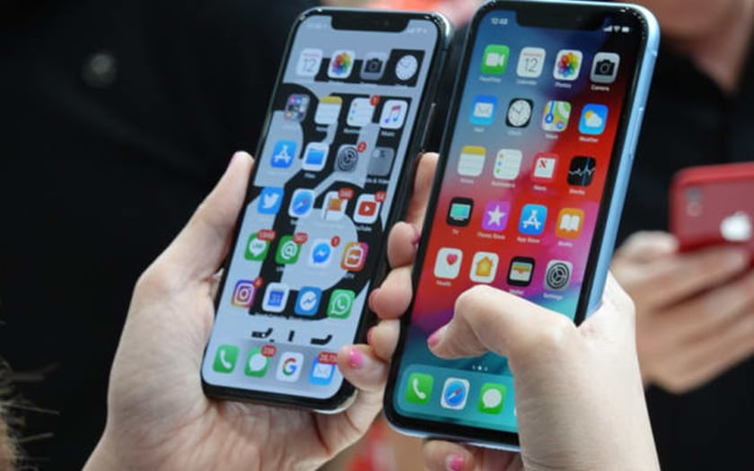
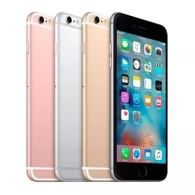
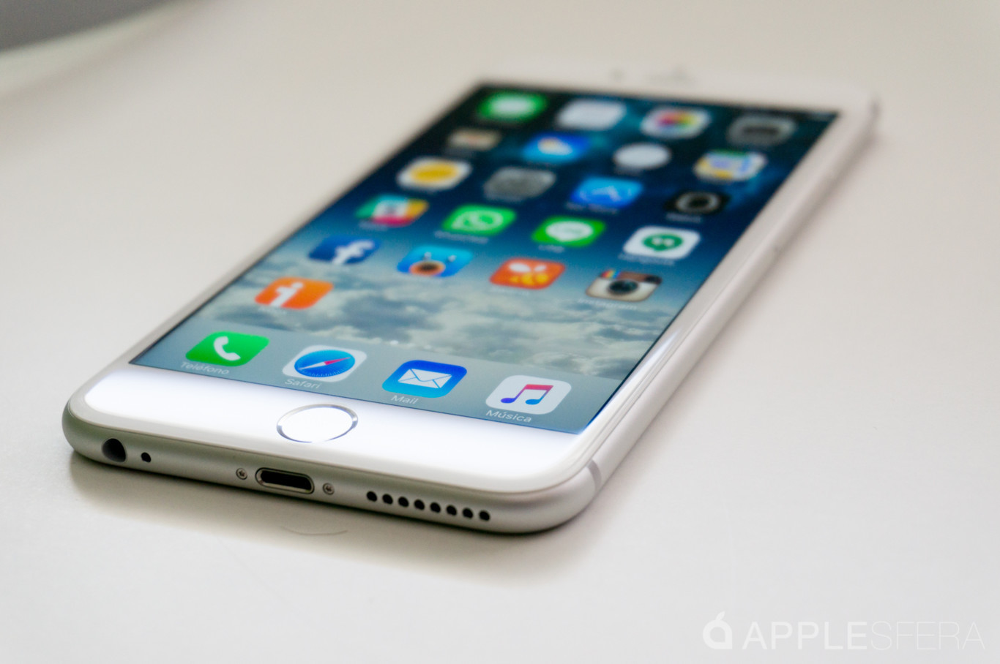

Tecnologia Celular
iPhone
iPhone es una línea de teléfonos inteligentes de alta gama diseñada y comercializada por Apple Inc. Ejecuta el sistema operativo móvil iOS, conocido hasta mediados de 2010 como "iPhone OS".
El iPhone dispone de una cámara de fotos de 12 megapíxeles y un reproductor de música (equivalente al del iPod), además de software para enviar y recibir mensajes de texto y de voz. También ofrece servicios de Internet, como leer correo electrónico, cargar páginas web y conectividad por Wi-Fi. La primera generación de teléfonos eran GSM cuatribanda con la tecnología EDGE; la segunda generación incluía UMTS con HSDPA.;1 la sexta generación ya incluía 4G LTE.

Steve Jobs anunció públicamente el iPhone en la Macworld Conference & Expo el 9 de enero de 2007,2 tras varios rumores y especulaciones que circulaban desde hacía meses.3 El iPhone se introdujo inicialmente en los Estados Unidos el 29 de junio de 2007. Fue nombrado «Invento del año» por la revista Time en 2007.4 El 11 de julio de 2008 salió a la venta el iPhone 3G, disponible en 22 países5 y en 70 para finales de año. Esta versión soportaba la transmisión de datos por 3G a una velocidad más rápida y tecnología AGPS

Para el evento WWDC 2009 se presentó el iPhone 3GS (S de Speed, velocidad), con el mismo diseño que el 3G, pero con hardware mejorado. El iPhone 3GS era hasta dos veces más rápido que su predecesor cargando páginas web o ejecutando aplicaciones, saca partido del estándar OpenGL ES 2.0 para ofrecer mejores gráficos 3D, soporta HSDPA a 7,2 MB (también conocido como 3.5G), cuenta con una nueva cámara de 3 megapíxeles con enfoque automático y grabación de vídeo, control por voz, brújula y soporte integrado para el Nike+iPod.
